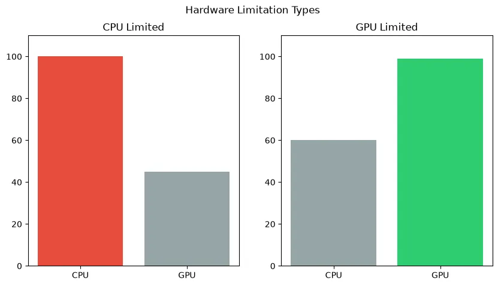
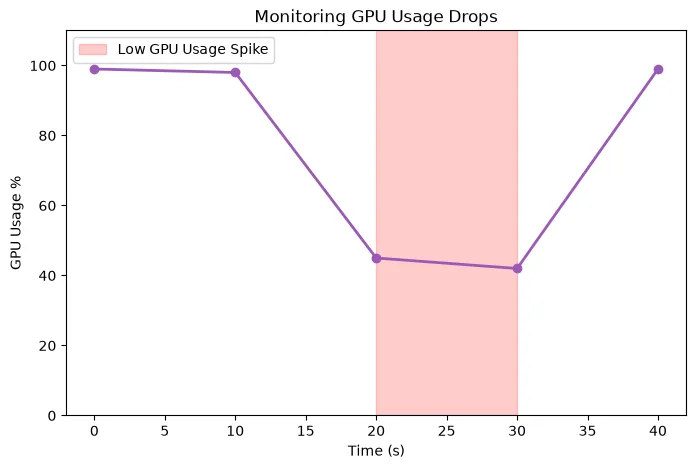
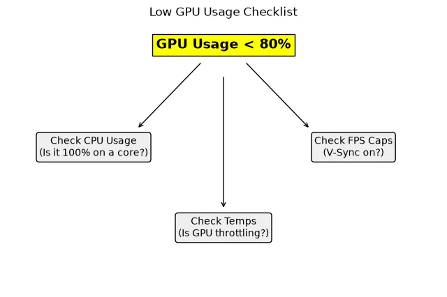

How to Fix Low GPU Usage While Gaming: Causes and Solutions
Is your graphics card resting while your game stutters? Discover why your GPU utilization is low and follow our troubleshooting checklist to get the performance you paid for.
You've spent a significant amount of money on a powerful graphics card, but when you launch your favorite game, the frame rate is disappointing. You open Task Manager or MSI Afterburner and see the problem: your GPU usage is sitting at 40%, 50%, or 60%.
Low GPU usage in gaming means your graphics card is not being fully utilized. Instead of rendering frames as fast as it can, it is waiting around for something else in the system. In this guide, we will diagnose the root causes of low GPU usage and provide a step-by-step checklist to fix it.
Quick Answer / TL;DR
Low GPU usage is most commonly caused by a CPU bottleneck or an artificial FPS cap (like V-Sync). To fix it, ensure your frame rate is uncapped, close heavy background applications, turn off V-Sync, and try increasing your gaming resolution to put more strain on the GPU. If your GPU usage is low but your FPS is already incredibly high, you do not have a problem.
What Does "Normal" GPU Utilization Mean?
Before fixing a problem, we must understand when a problem actually exists. 100% GPU usage is not automatically the goal in every situation.
If you are playing a game and achieving 144 FPS (matching your 144Hz monitor), and your GPU usage is only 60%, that is a good thing. It means your GPU is so powerful it doesn't have to work hard to reach your target frame rate, resulting in lower temperatures and less fan noise.
Low GPU usage is only a problem when your frame rate is below your target, or when you are experiencing heavy stuttering.

The Main Causes of Low GPU Usage
1. Severe CPU Bottlenecks (The Most Common Cause)
The graphics card cannot draw a frame until the processor tells it what to draw. If your CPU is too slow, or if a specific game engine relies heavily on a single CPU core, the processor will max out at 100% capacity. When this happens, the GPU finishes its task and then waits idle for the CPU to catch up. This waiting period is what causes the GPU utilization percentage to drop.
2. V-Sync and Frame Rate Caps
If V-Sync is enabled in your game settings or GPU control panel, the game will limit your frame rate to match your monitor's refresh rate (e.g., 60 FPS). If your GPU can easily render 150 FPS, capping it at 60 FPS will intentionally force the GPU to lower its utilization to save power.
3. Low Resolution Gaming (1080p)
If you pair a high-end GPU like an RTX 4080 with a 1080p monitor, the GPU will barely break a sweat. Lower resolutions are so easy for modern graphics cards to render that they often finish the job instantly, shifting the bottleneck entirely to the CPU and resulting in low GPU usage percentages.
4. Engine Limitations and Poor Optimization
Some games are simply coded poorly. Unoptimized games, older DirectX 9 titles, or heavily modded games often cannot utilize modern multi-core CPUs effectively, resulting in an artificial software bottleneck that causes low GPU usage regardless of your hardware.

Troubleshooting Checklist: How to Fix Low GPU Usage
If your FPS is low and your GPU usage is low, follow these steps to diagnose and fix the problem:
Step 1: Disable V-Sync and FPS Caps
Go into the game's display or graphics settings. Ensure V-Sync is turned OFF. Ensure the "Maximum Frame Rate" limit is set to "Unlimited" or "Off". Do the same in the NVIDIA Control Panel or AMD Adrenalin software.
Step 2: Check CPU Utilization
Open Task Manager or MSI Afterburner while the game is running. Look at your CPU usage. Crucially: look at individual core usage, not just total usage. If your total CPU usage is 30%, but "Core 1" is pinned at 100%, you have a severe CPU bottleneck. Refer to our guide on how to fix a CPU bottleneck.
Step 3: Increase the Resolution or Graphics Quality
If you are playing at 1080p on low settings, you are artificially starving the GPU of work. Try increasing the resolution (using NVIDIA DSR or AMD VSR if your monitor is only 1080p) to 1440p, or turn the graphics settings to Ultra. This forces the GPU to work harder, which can smooth out frame pacing.
Step 4: Check for Thermal Throttling
Is your CPU or GPU overheating? If your CPU hits 95°C+, it will severely reduce its clock speed to prevent damage. When the CPU slows down, it can't feed the GPU, resulting in low GPU usage. Monitor your temperatures.
Step 5: Change Windows Power Settings
Ensure Windows is not in "Power Saver" mode. Go to Control Panel > Hardware and Sound > Power Options, and select "Balanced" or "High Performance." Additionally, in the NVIDIA Control Panel, under "Manage 3D Settings," set "Power Management Mode" to "Prefer maximum performance."
Step 6: Update Drivers
A corrupted or outdated GPU driver can prevent the card from boosting to its correct clock speeds. Download the latest drivers from AMD, NVIDIA, or Intel. If the problem persists, use Display Driver Uninstaller (DDU) to completely wipe the old drivers and perform a clean install.
Step 7: Check RAM Capacity and Speed
If your system RAM is completely full, the CPU has to pull data from the slow hard drive, causing massive delays and starving the GPU. Ensure you have enough RAM and that XMP/EXPO is enabled in your BIOS so it runs at maximum speed.

How the Bottleneck Calculator Can Help
If you have gone through the entire checklist and your GPU usage is still consistently stuck at 50% in demanding games, you may have a permanent hardware mismatch. Use our PC Bottleneck Calculator to check your exact CPU and GPU pairing at your specific resolution. The calculator will estimate if your processor is fundamentally too weak to fully utilize your graphics card.
Frequently Asked Questions
Is 50% GPU usage bad?
Not necessarily. If you are playing an older game, or if your frame rate is capped at 60 FPS and your GPU can easily achieve that, 50% usage is perfectly normal and healthy. It is only "bad" if your frame rate is lower than you want it to be.
Will upgrading my CPU fix low GPU usage?
If your low GPU usage is caused by a CPU bottleneck (meaning your CPU is at 100% load while the GPU is waiting), then yes. Upgrading to a faster processor will allow it to send instructions to the GPU faster, increasing your GPU usage and your frame rate.
Why is my GPU usage dropping to 0%?
Sudden drops to 0% usually indicate a severe system hang. This is rarely the GPU's fault. It is often caused by a failing storage drive, completely exhausted system RAM, or a massive spike in background CPU activity (like an antivirus scan starting mid-game).
Final Takeaway
Low GPU usage is rarely a sign of a broken graphics card. Instead, it is an indicator that your system is out of balance. By identifying the true bottleneck—whether it's an artificial software cap, a thermal issue, or an aging CPU—you can restore balance to your system and ensure you are getting the gaming performance you paid for.